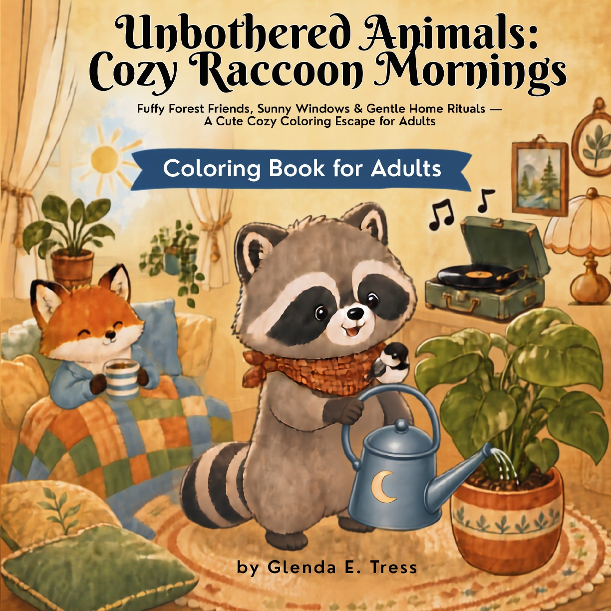
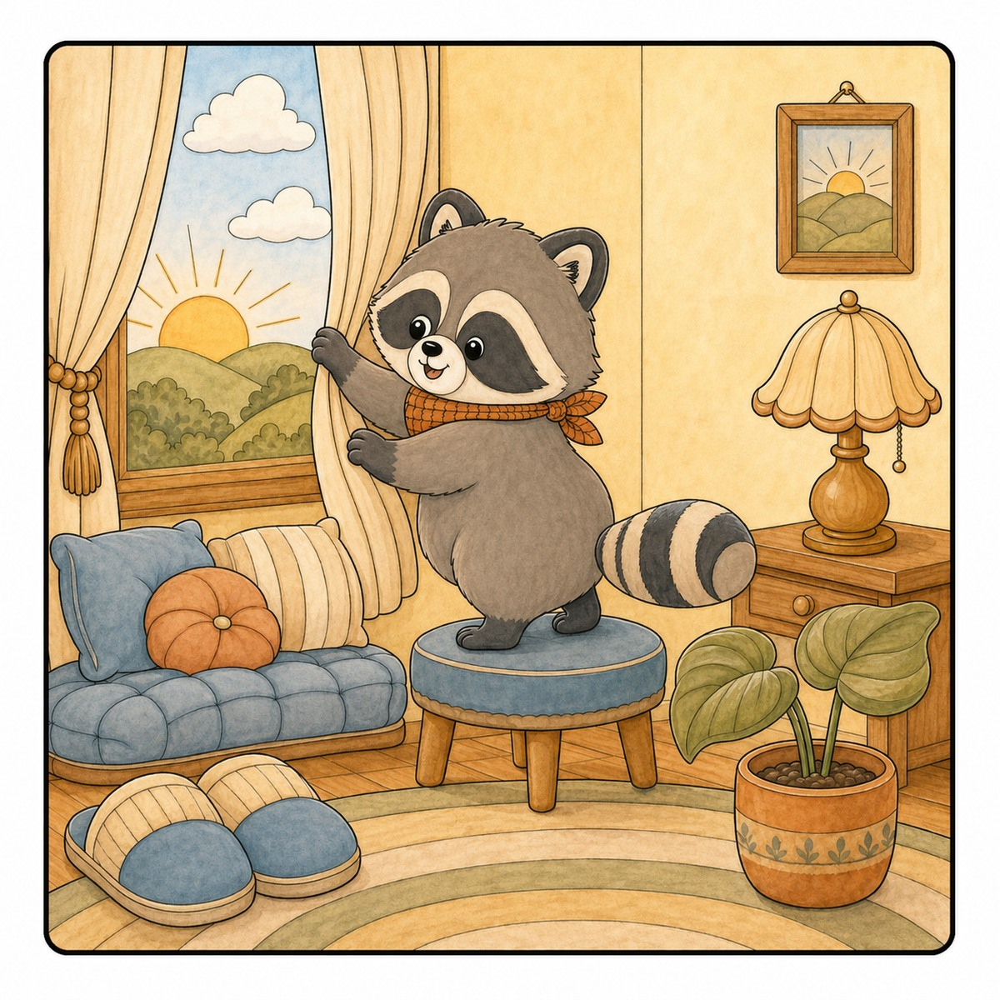
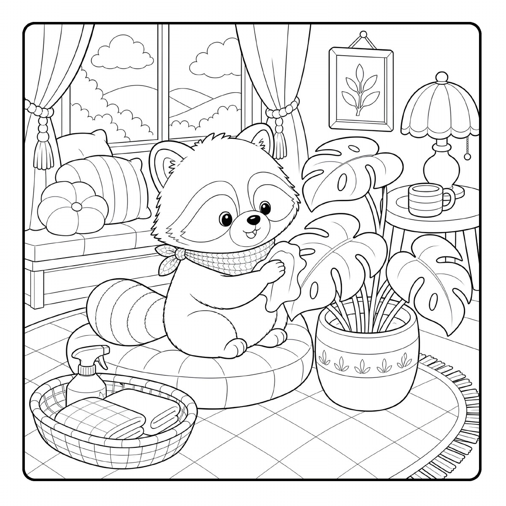
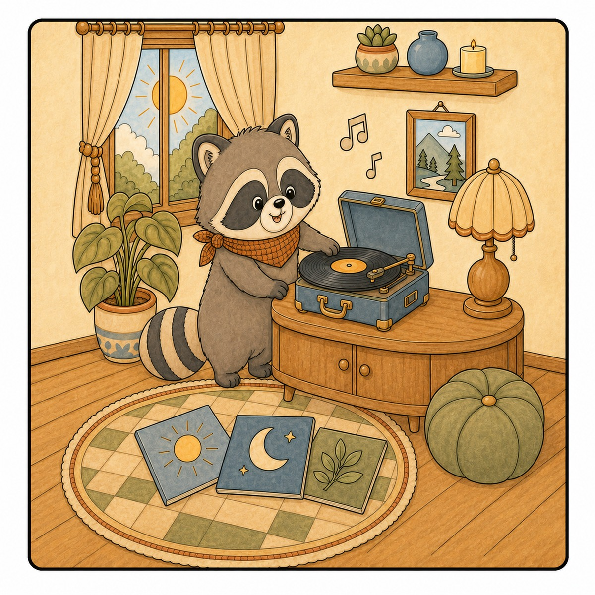
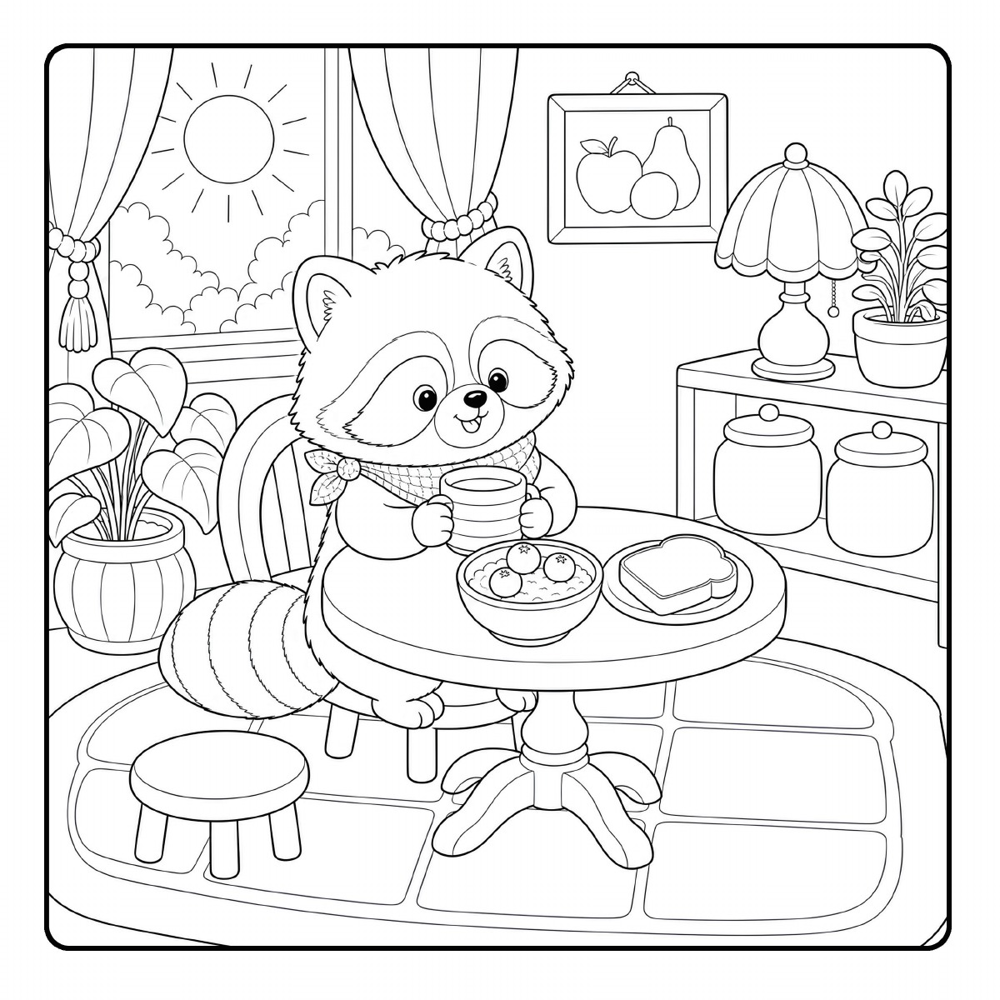
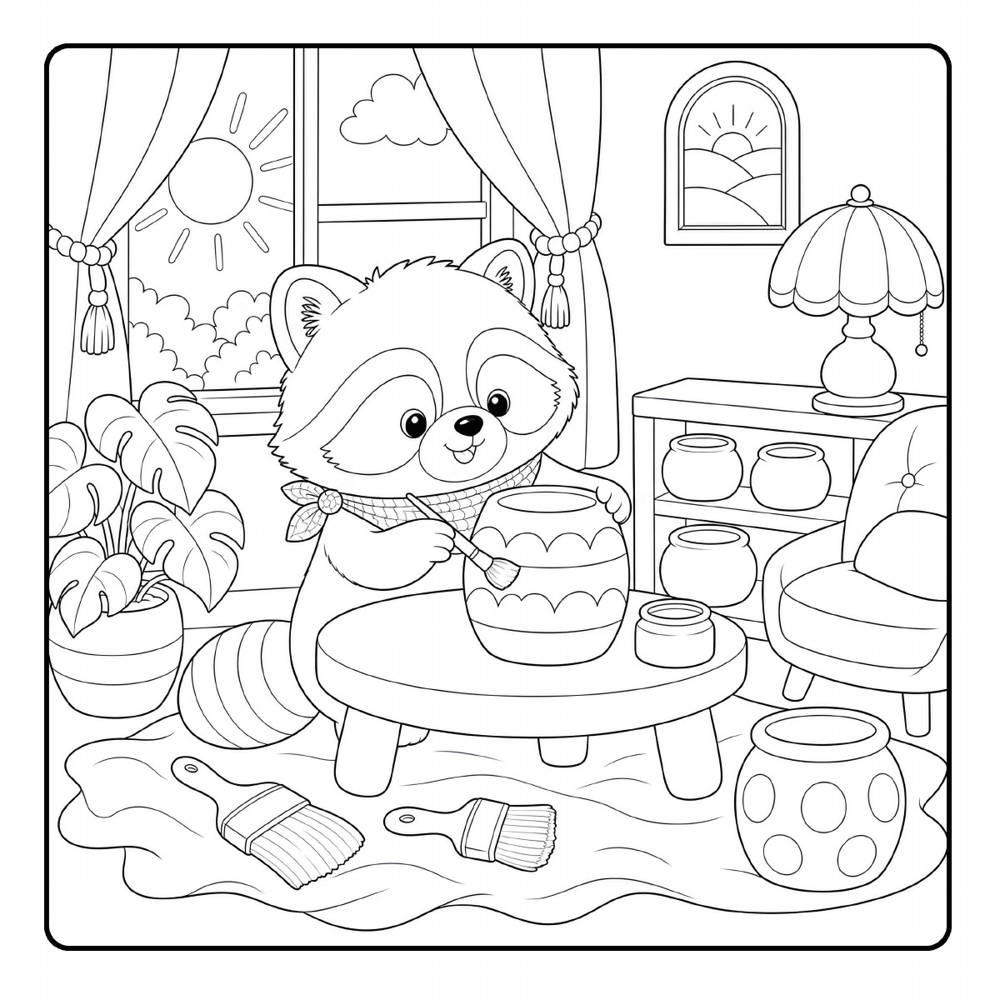
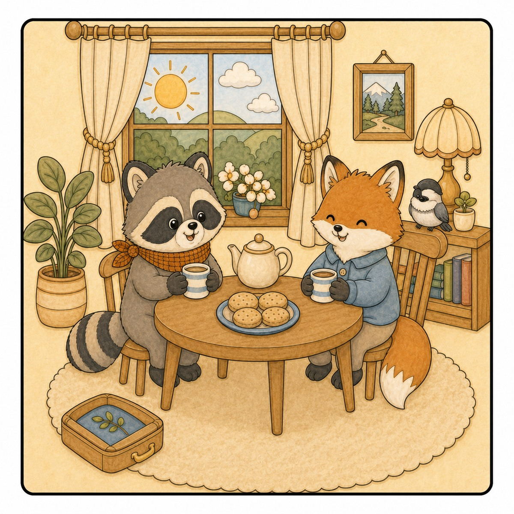
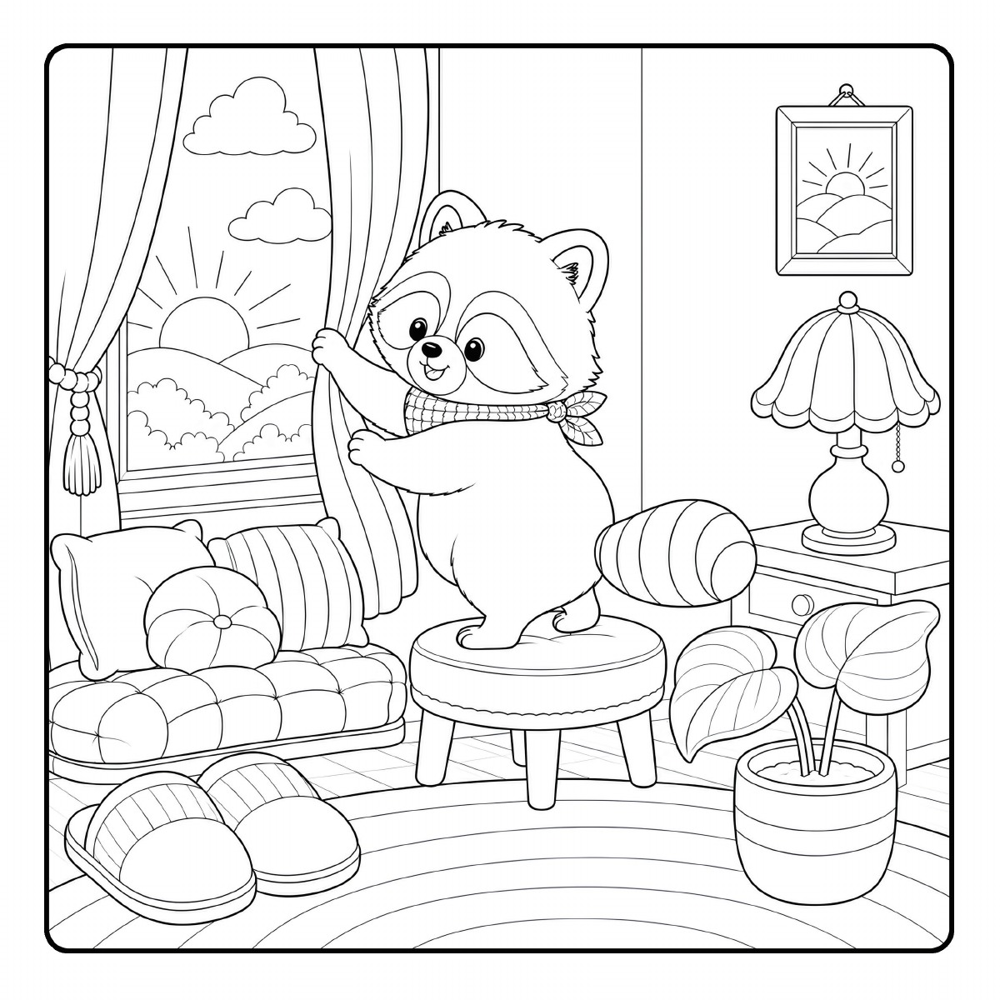

The Unbothered Animals Collection
Unbothered Animals
Cozy Raccoon
Mornings
Step into Mallow’s sun-warmed cottage, where broad leaves, a favorite record, a striped mug, and quiet company make room for an unhurried morning.
36 coloring scenes · A cozy escape for adults

Fluffy forest friends. Sunny windows. Gentle home rituals.
Warm rooms. Useful rituals. Room to pause.
A little care.
A lot of comfort.
Follow Mallow from first light to the last quiet cup. Tend oversized plants, choose a record, settle in for breakfast, paint a plant pot, and share tea with Fern the fox and Pip the chickadee. These complete cottage rooms invite you to enjoy one small moment at a time.
Plants, music, familiar comforts, and quiet friendship.
Square coloring scenes with a blank page behind each one.
Bold linework, medium detail, and a marker test page to begin.
A little something to begin with
Eight cozy pages.
Completely free.
Settle in with a printable sampler drawn from four of Glenda’s gentle coloring worlds. A little introduction to the collection, ready for your colors.
- Eight printable coloring pages
- Four cozy coloring-book collections
- Delivered to your inbox
Inside the book
One morning.
Many small joys.
Six cozy scenes, mixing original line art with colored examples for inspiration. The printed book’s coloring pages are black and white.







A cottage that makes room for you
A morning with
room to pause.
Choose a page and a few favorite colors. Mallow’s cottage is full of small things to notice, with no need to hurry to the next one.
Buy on Amazon